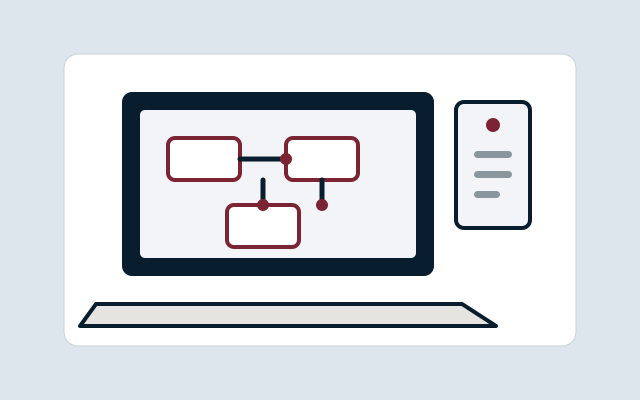

AI Data Use Rules Sprint
Map actual tools and workflows and convert approved requirements into practical rules that people can apply consistently.
£1,250 fixed
Service family
15 current governed product routes in the authoritative Business Plan classification.

Map actual tools and workflows and convert approved requirements into practical rules that people can apply consistently.
£1,250 fixed
Turn governance requirements into practical AI policy, acceptable-use rules, responsibilities and SOPs that can be implemented in day-to-day work.
£1,500 fixed
Provide a practical responsible-AI workplace baseline that improves staff judgement and application rather than passive awareness, without replacing role-specific skills training or organisational policy.
£750 per cohort
Teach and test practical AI use on recurring workflows of one defined role/team, requiring source verification, safe data/tool judgement, human authority and independent transfer rather than generic prompting.
£1,250 per workshop
Equip leaders to identify worthwhile AI uses, set boundaries, govern adoption and create an actionable next-step plan.
£950 standard; indicative £700–£1,250
Turn 3–5 recurring workflows into an evidence-honest decision about where AI is worth testing, what should be fixed first, where a non-AI route is better and where AI should not currently be used.
£900 fixed
Convert one validated use case into one tested, repeatable, human-operated AI workflow inside the customer’s existing supported AI workspace, with clear instructions, approved inputs/sources, human-control points, acceptance tests, manual fallback, SOP and handover.
£1,500 fixed
Provide a clear inventory and governance view of how AI tools and accounts should be controlled within the organisation.
£1,250 standard; indicative £750–£2,000
Turn business requirements into an evidence-based tool comparison and recommendation with visible trade-offs.
£1,250 standard; indicative £850–£1,750
Apply structured adversarial review to identify material defects and strengthen outputs before use or release.
£750 fixed
Design a proportionate operating model that connects AI opportunities, roles, decisions, controls, learning and improvement.
£1,750 standard; indicative £1,250–£2,500
Provide ongoing governed support for new use cases, questions, updates and practical adoption issues.
Indicative £300–£900 per month
Design and implement proportionate low/no-code or AI-assisted automation where it genuinely improves the process.
Indicative £1,500–£3,500 per project
Create a governed source structure and retrieval layer so staff can find and use current organisational knowledge more reliably.
£1,500 standard; indicative £1,000–£2,250
Finish the website the customer already has without an unnecessary rebuild: establish what is unfinished, complete the bounded final-mile work, QA the exact candidate and leave a clear release decision.
£1,250 fixed